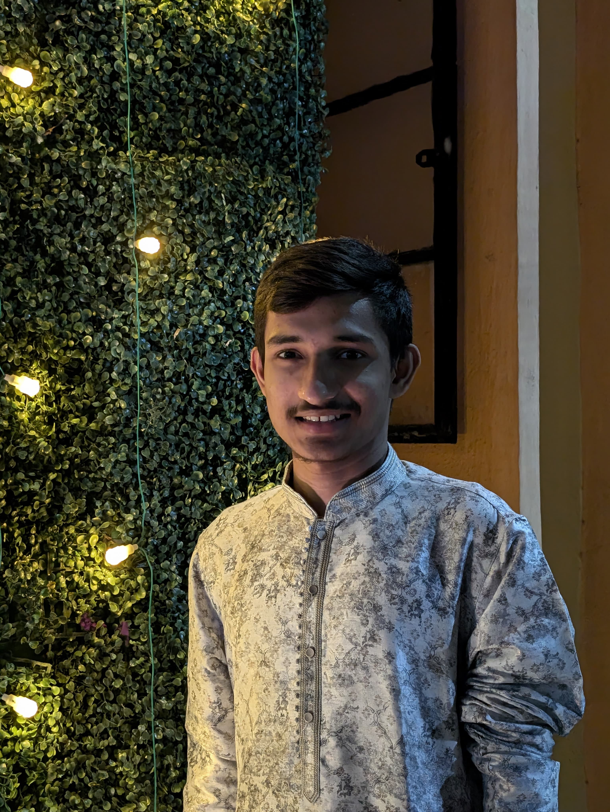

Yelamanchali Rohit

Gmail:-rohit.yelamanchali@gmail.com Phone:-+919182364572
Summary-
I am very passionate to work as a web developer.I always try to give my best as a web developer.
Education-
Conerstone Public School
- Completed my higher schooling
- Passed out of the school with a percentage of 97.2
Aspire Junior College
- Completed my intermediate(both the years)
- Secured a percentage of 96.9
National Institue Of Technology,Warangal
- Completed my first year in Electrical and Electronics Engineering
- Waiting for my result of second semester
- Secured a SGPA of 9.82 in the first semester
- Will be taking a minor in Computer Science and Engineering from the third semester
Academic Projects-
LUMICANE-
- Created a smart blind stick for the blind people
- Created this as a part of 'Design Thinking' course in the second semester
Research Experience-
- Participated in many hackathons conducted by the Computer Science and Engineering Department
- Gained a lot of experience during these hackathons
- Won several medals and participation certificates
- Developed a lot of interest towards the web development field during these events
Skills-
- Advanced C++
- HTML,CSS
- Javascript
Awards and Certificates-
- Certificate of appreciation for LUMICANE Project
- Gold medal for solving a problem statement in a hackathon
Contact Me